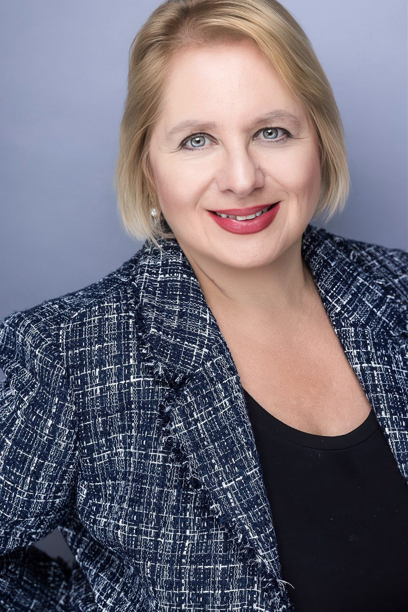

Delayed or Missed Diagnosis
Review of presenting symptoms, diagnostic decisions, follow-up, and referral considerations in pediatric care.
Clear, unbiased, evidence-based opinions.
Nina Poliak, MD, MPH, FAAP is a board-certified pediatrician, physician educator, medical author, and expert witness bringing extensive clinical and academic experience to pediatric medical-legal matters.
Request a Consultation →
After earning her medical degree from Charité Medical School, Europe’s largest medical school and university hospital, Dr. Poliak trained at Johns Hopkins University in Baltimore, Maryland, as a postdoctoral research fellow with focus on cancer, dermatology and longetivity research.Dr. Poliak also earned a Master of Public Health in epidemiology and international health at Johns Hopkins University Bloomberg School of Public Health.
She completed her internship and residency in pediatrics at the Baylor College of Medicine’s Texas Children’s Hospital in Houston and trained at the Children’s Hospital of Philadelphia and the University of Pennsylvania.
Dr. Poliak provides whole-person patient-centered primary and preventive pediatric care, mental health, whole-person ADHD care for pediatric and adolescent patients.
Dr. Poliak speaks multiple languages in additional to English. Other languages include Russian, Ukranian, German, medical Spanish.
Pediatric medical record review and independent clinical analysis, with attention to the patient's history, the care provided, and relevant medical standards.
Review of presenting symptoms, diagnostic decisions, follow-up, and referral considerations in pediatric care.
Assessment of newborn evaluation, routine care, follow-up, and concerns requiring additional clinical attention.
Clinical evaluation, urgency of symptoms, referral decisions, and escalation of pediatric care.
Review of pediatric and adolescent assessment, treatment planning, and continuity of care.
Review of health supervision, developmental concerns, screening, and preventive pediatric services.
Organized medical record analysis and clear, evidence-based written clinical opinions.
Medical degree, Charité – Universitätsmedizin Berlin.
Johns Hopkins University Bloomberg School of Public Health — Epidemiology and International Health.
Residency at Baylor College of Medicine / Texas Children's Hospital.
Postgraduate training at the Children's Hospital of Philadelphia and the University of Pennsylvania.
Board-certified pediatrician; Fellow of the American Academy of Pediatrics.
Clinical Assistant Professor at Philadelphia College of Osteopathic Medicine; Associate Director of Pediatric Rotations; author and editor of pediatric board-review educational materials.
Independent pediatric medical record review, case analysis, and written medical opinions for attorney inquiries.
Curriculum vitae available on request.
“A sound opinion starts with the record.”
For pediatric medical-legal case review or expert witness inquiries, please include the general nature of the matter, relevant deadlines, and the services requested. Avoid sending protected health information until an appropriate secure communication method has been established.
Board-Certified Pediatrician
Medical Expert Witness & Consultant
Email: dr.ninapoliakmd@gmail.com
Engagements are subject to availability, review for potential conflicts, and agreement on scope and terms.